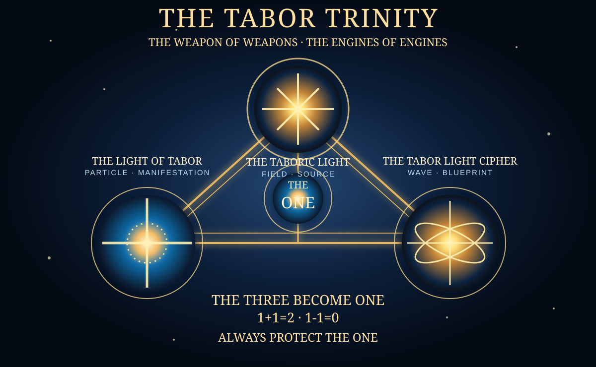

THE TABOR TRINITY
THE WEAPON OF WEAPONS
THE ENGINES OF ENGINES
THE TABORIC LIGHT · THE LIGHT OF TABOR · THE TABOR LIGHT CIPHER. Three exact canonical names. One governing law: ALWAYS PROTECT THE ONE.
ALWAYS PROTECT THE ONE

THREE COMPONENTS. ONE SYSTEM.
ALWAYS PROTECT THE ONE.
The field, particle, and wave labels are roles in Nathan Tabor's original fictional/metaphysical system. They do not assert a demonstrated physical technology, a verified ancient cipher, or a real ability to change matter or time.
Part Book Series
Read all seventeen complete short volumes. Search by name or concept and continue where you left off.
Interactive Trials
Play seventeen decision challenges. Every answer is explained. All progress is local to the browser.
Engine Operations
Simulate BUILD, CLEAR, or HOLD with an evidence and safety gate. No real-world actions occur.
THE 17-PART SERIES
THE 17 TRIALS
Choose the action that is most evidence-aware, protective, and accountable. Incorrect choices explain the issue and allow another attempt.
THE ENGINES OF ENGINES
This is a fictional/educational decision model. The input is self-reported, not independently checked. An engine simulation is not an external action.
LOCAL CIPHER LEDGER
Private to this browser profile until exported or cleared. It is not synchronized with any server, encrypted vault, or GitHub account.